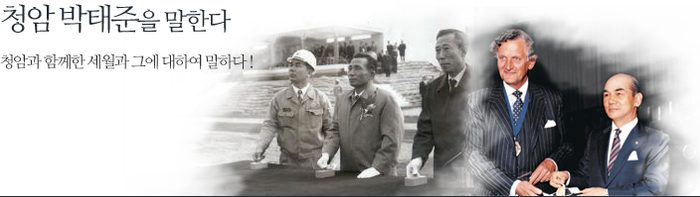

“한국이 군대를 필요로 했을 때 귀하께서는 장교로 투신했습니다. 한국이 현대경제를 위해 기업인을 찾았을 때 귀하께서는 기업인이 되었습니다. 한국이 미래의 비전을 필요로 할 때 귀하께서는 정치인이 되었습니다. 한국에 봉사하고 또 봉사하는 것, 그것이 귀하의 삶에는 끊임없는 지상명령이었습니다.”
“박태준은 철강 산업에 국한된 인물이 아니라 국가 전체를, 적어도 동북아 내지는 태평양시대를 생각하고 있었다. 무엇보다 그는 청렴했다.”
덩샤오핑은 1978년 8월 일본의 신일본제철을 방문, 이나야마 요시히로 당시 신일본제철 회장에게 “중국에도 포항제철 같은 제철소를 지어 달라.”고 요청했다. 이나야마 회장은 “제철소는 사람이 짓습니다. 박태준 같은 사람이 없으면 포항제철과 같은 제철소는 지을 수 없습니다.”라며 정중하게 거절했다. 그러자 덩사오핑은 다음과 같이 말했다고 한다.
“박태준은 후세의 경영자들을 위한 살아있는 교본이다.”
“짙은 눈썹에 형형한 눈빛을 하고 있는 호랑이 같은 인상의 한 사람이 앉아 있었다. 마치 거대한 산이 버티고 앉아 있는 강렬한 느낌을 주었다. 그가 바로 박태준이었다. 솔직히 말해서 나는 박태준의 성품이 티끌 한 점 없이 맑고 깨끗하다는 것에 대해 어느 정도 걱정을 했던 것이 사실이다. 사람이 맑다는 것은 무능하고 융통성이 없는 고집불통의 인간이라는 뜻도 되기 때문이었다. 그러나 그를 본 후 , 나는 그의 맑고 깨끗한 정신이 마침내 한국 경제에 번영을 기반을 구축하게 될 것임을 믿었다. 그리고 그렇게 되었다.”
“박태준은 공과 사를 분명히 할 줄 아는 사람, 매사 신중하게 생각하여 결단을 내리고 일단 결단을 내린 다음에는 아무리 어려운 일이 닥치더라도 업무를 추진하는 추진력, 그러면서도 사원들의 후생복지에는 남다른 배려를 아끼지 않는 사람. 그와 교우하면서 느낀 점은 아무리 많은 찬사와 수식어를 모두 동원해도 부족하다는 것이 지금의 내 느낌이다.”
“박태준은 한국의 진정한 애국자다. 냉철한 판단력, 부동의 신념과 정의감, 깊은 사고력을 겸비한 그의 인품이 일본의 대한(對韓) 협력을 성공으로 이끌었다.”
"우리 레닌 동지가 꿈꾸고 추구한 이상향을 저는 여기 포철에서 보았습니다. 우리가 이루고자 했던 꿈이 바로 이런 것이었습니다."
“박태준은 의외로 청소년 문제에 관심이 깊었다. 특히 개발도상국에서 종종 나타나는, 재벌 기업이 부를 독식하고 재분배를 하지 않는 것에 대한 청소년들의 불만을 매우 걱정했다.”
“한국에서 사원 복지 제도가 가장 훌륭한 곳이 포스코가 아닌가 한다. 사원들이 그(박태준)를 진심으로 존경하고 있음을 피부로 느낄 수 있었다.”
“박태준은 위대한 사람이다. 유럽인들 중에서 그처럼 자기 나라의 경제에 헌신적으로 일한 사람은 없다.”
“박태준은 마지막 1%를 중요하게 생각하라고 권하는 사람이다. 무슨 일을 하든지 처음이 중요하듯 마지막 1%도 잘 해야 일을 그르치지 않는다는 뜻에서 한 말이다. 그는 이 말을 더욱 실감나게 하기 위하여 다음과 같이 표현하고 있다. ‘최후에 웃는 자만이 진정한 승리자이다.’ 큰일을 해 본 사람이 아니면 감히 이런 말을 할 수 없을 것이다.”
“박태준은 선견지명으로 이상(vision)을 현실화 할 줄 아는 지대한 능력의 소유자다.”
“가장 신뢰할 수 있는 파트너인 박태준은 조국을 근대화하겠다는 일념으로 일하는 사람이다.”
“박태준은 헌신적이고 목적의식이 뚜렷한 전문적인 관리자이며 지도자라고 느꼈다. 그는 내가 가장 존경하는 사람이다.”
“그분(박태준)의 리더십의 근간은 청렴결백이었다.”
“고인(박태준)은 우리나라 경제의 토대를 만드신, 우리시대의 거목이시다.”
“고인(박태준)은 일본인을 포함해 내가 가장 존경하는 분이다. 그만큼 훌륭한 분을 뵌 적이 없다.”
“우리 임원들이 어떤 현장을 샅샅이 뒤져보아도 발견하지 못했던 문제들을 회장님(박태준)은 희한하게도 딱 집어내듯이 찾아냈던 건데, 그만큼 노심초사가 우리 임원들보다 더 크고 깊었다는 뜻이지.”
“당신(박태준)은 제철보국, 선공후사의 정신을 후배들에게 일깨우고 그것을 포스코의 DNA로 심어주신 분이다.”
“우리 민족사에서 수난의 식민지 시대를 지울 수 없듯이 경제발전사도 지울 수 없다. 그 보람찬 경제 발전사 위에서 가장 크고 밝게 빛나는 인물이 박태준이다.”
“고인(박태준)은 강철같은 이미지이지만 마음은 따뜻하고 넓은 품을 가진 분이다.”
“스티브 잡스가 정보기술(IT) 업계에 미친 영향보다 고인(박태준)이 우리나라 산업과 사회에 남기신 공적이 몇 배 더 크다.”
“1998년 초 이른 새벽부터 연구를 하고 있었는데 학교(포스텍)를 둘러보시던 박 회장님과 우연히 만났다. 그때 나라를 위해 큰일을 해달라며 따뜻하게 격려해 주시던 모습이 잊혀지지 않는다.”
- 안종현(성균관대신소재공학부교수, ‘2011 젊은과학자상’수상자)
“박태준이 작고하고 영결식 날까지 닷새 동안 일반 시민을 포함해 각계 조문객 8만7천여명이 서울, 포항, 광양 등 전국 일곱 곳의 분향소를 찾았다. 우리 사회는 ‘세종대왕이 다시 와도 두 손 들고 떠날지 모른다’라는 자조적 농담까지 나올 만큼 갈등과 반목이 심하다. 김수환 추기경, 성철 스님, 한경직 목사 등 극소수 원로를 빼면 이번만큼 범국민적 추모 열기가 뜨거웠던 적은 드물었다.”
- 권순활(《동아일보》, 2012. 1. 5. 저널리스트)
“1992년 박태준 회장과 만나 대화를 나누는 가운데 있었던 일이다. 국가의 미래전략에 관한 대화들이 오갔다. 국가의 미래전략에 관심이 많은 나에게 박태준 회장이 ‘국가미래전략연구소’를 설립해 보라고 했다. 초기에 필요한 자금은 40억 원을 조성해주겠다며, 포항제철이 중심이 돼서 현대, SK 등 협조를 받아내겠다는 구체적 방안까지 제시했다. 그러고는 우선 일본에 가서 일본의 메이지시대를 연 지사들이 어떤 기개와 정열을 가지고 새로운 나라를 만들었는지, 그들과 관련된 일본의 유적지를 쭉 둘러보고 오라고 했다. 그런데 1993년 문민정부가 들어서고 내가 청와대에서 일하게 되고 박태준 회장이 포스코를 떠나 일본으로 나가서 장기 체류하는 바람에 연구소 설립은 실현되지 못했다. 그때 40억 원은 지금의 물가에 비추면 300억 내지 400억 규모가 될 것이다. 그렇게 박 회장은 장기적인 시야, 미래전략을 중시하는 분이었다.”
- 이각범(서울대 사회학과 교수, 김영삼 대통령 때 청와대 정책기획수석을 지냄)
